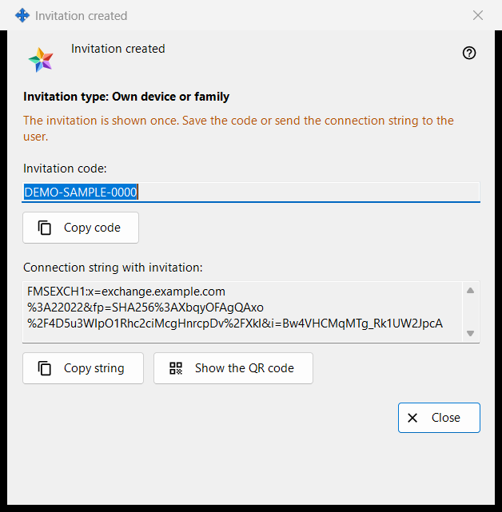
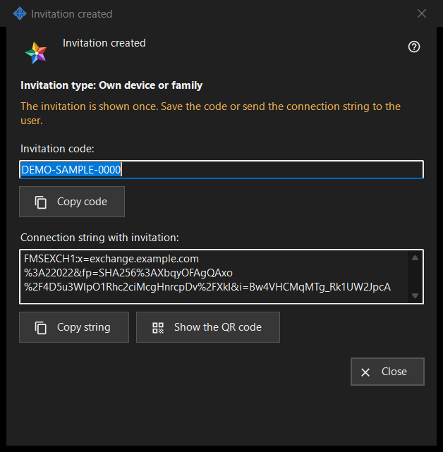

Invitation created
What this is for
This window shows a new invitation once, right after «Create» in the window «Create invitation». It holds the one-time code and, when the exchange server program can build it, a connection string that already carries the code.


In this order
- Check the line «Invitation type: ..».
- Press «Copy code», or «Copy string» for the string with the invitation, or «Show the QR code».
- Give it to the person over a channel you trust.
- Press «Close». The same code is not shown again.
The elements
Type and warning
The bold line «Invitation type: Own device or family» names the type you chose. The line in the warning colour says «The invitation is shown once. Save the code or send the connection string to the user.» When the window closes, the code and the string are erased from it. If one is lost, withdraw the invitation in the list and create a new one.
Invitation code
«Invitation code:» shows the code in a read-only box. «Copy code» copies it as a secret, kept out of the Windows clipboard history (Win+V) and the cloud clipboard, and the line below says «Invitation code copied to clipboard.» or «Could not copy code to clipboard.»
Connection string with the invitation
«Connection string with invitation:» appears only when the string could be built. It names the server and carries the code, so treat it like the code: «Copy string» copies it as a secret too. It does not hold your account password.
QR code
«Show the QR code» opens a picture of the string with the invitation. Anyone who sees it can use the invitation, so show it only to the person it is meant for. If the picture cannot be made, the line says «The QR code is not available right now.»
What the other person does
In the exchange account window («Sign in..») the person pastes the string with «Paste» or opens a saved file. A string that carries an invitation switches the window to registration: they choose a login, enter a password twice and press «Create the account». A wrong or already used invitation, or a login that is taken, is refused with a message.
Close
«Close» ends the window and wipes the code and the string from it. Nothing else is saved here.
Manager settings · SFTP sharing settings · Exchange server settings